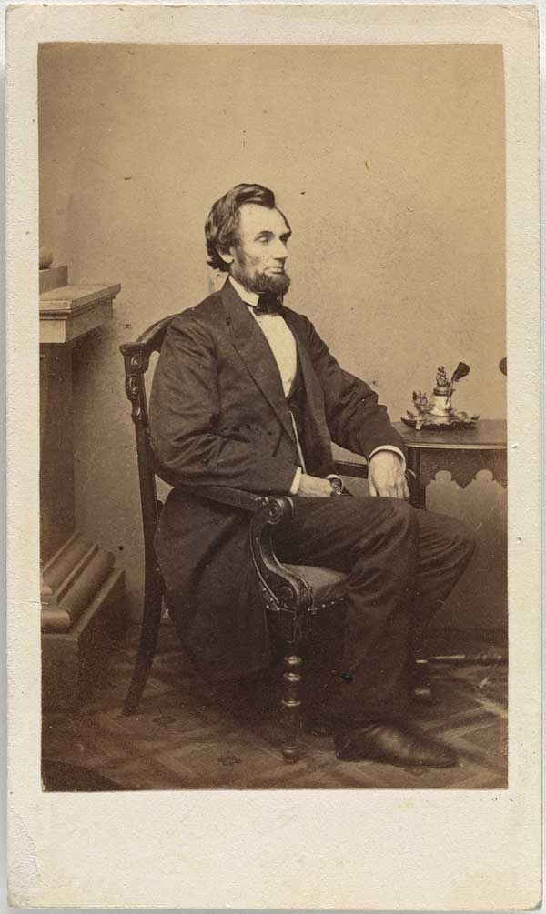

Directions: Fill in the chart as we study each part of the lesson. Keep this page in your notebook. You will use it again on the review day before the unit test, and it is the record the writing task argues from.

| Part | The expectation | What happened | The lesson drawn |
|---|---|---|---|
| Sumter and the call | |||
| The Anaconda Plan | |||
| First Bull Run | |||
| The war in 1862 | |||
| Antietam |
Two theories, seventeen months, in one paragraph. Read across your chart. State each side's theory of victory in your own words, then explain which theory the record of 1861 and 1862 fits better, using at least three rows of the chart and one date from each row you use.
| Part | The expectation | What happened | The lesson drawn |
|---|---|---|---|
| Sumter and the call | A short war, settled by seventy five thousand volunteers serving ninety days. | Fort Sumter was bombarded on April 12, 1861, and surrendered on April 14. The call of April 15 brought Virginia, Arkansas, Tennessee, and North Carolina out, making eleven Confederate states, while Delaware, Maryland, Kentucky, and Missouri stayed. | The war's opening act enlarged the war. The call meant to suppress a rebellion in three months instead fixed the Confederacy's full size. |
| The Anaconda Plan | Scott proposed strangling the Confederacy slowly, by blockade and the Mississippi, and the public mocked the plan as too slow. | The blockade was proclaimed in April 1861 and built toward some six hundred vessels, and in 1862 Grant and Farragut began the river and port campaign the plan described. | The mocked plan became the war's frame in substance, adopted piece by piece as the war lengthened. |
| First Bull Run | Excursion crowds from Washington expected to watch the war end in an afternoon on July 21, 1861. | The Confederate army won the field near Manassas and the Union army dissolved into a rout that swept the watchers home with it. | The ninety day war was a fiction. Both governments had to build real armies, and McClellan built the Army of the Potomac and then declined to spend it. |
| The war in 1862 | McClellan's great army was expected to take Richmond and finish the war in the east. | Lee drove McClellan from Richmond in the Seven Days and won Second Bull Run in August, while Grant took Forts Henry and Donelson, Farragut took New Orleans, and Shiloh cost some twenty four thousand casualties by the usual estimates. | The east stalled and the west moved, and the price, counted at Shiloh, was higher than either side had imagined in 1861. |
| Antietam | Lee expected a victory on northern soil to win European recognition for the Confederacy. | On September 17, 1862, with Lee's lost orders in hand, McClellan fought him to a standstill at some 22,700 casualties by the usual reckoning. The invasion ended, and Gardner's photographs of the dead, described in this lesson and not reproduced, were exhibited in New York that October. | A draw on the field was a strategic Union victory, and it gave Lincoln the standing to issue the Preliminary Emancipation Proclamation on September 22, 1862. |
Two theories, seventeen months, in one paragraph. Strong answers state the theories plainly before judging them. The Union's theory was Scott's: with about 22 million people against about 9 million, strangle the Confederacy by blockade and split it by the Mississippi. The Confederacy's theory was endurance: defend at home, outlast northern patience, and let King Cotton bring European recognition. The record of 1861 and 1862 fits the Union theory better in substance. Bull Run on July 21, 1861, killed the short war both sides had expected. The blockade and the river campaign advanced through 1862 at New Orleans and the Tennessee forts. Cotton brought no recognition, because Britain turned to India and Egypt. Antietam on September 17, 1862, ended the invasion that was supposed to win recognition, at a cost the Antietam record makes visible without reproducing its photographs.